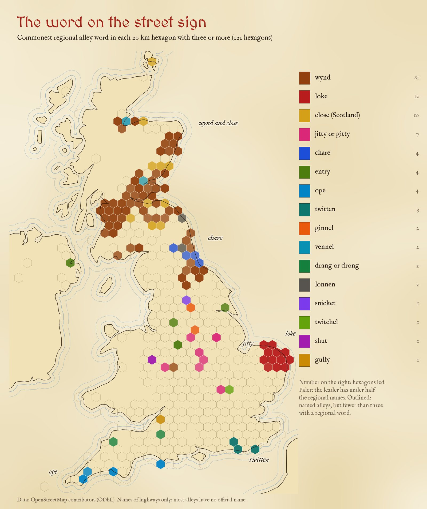
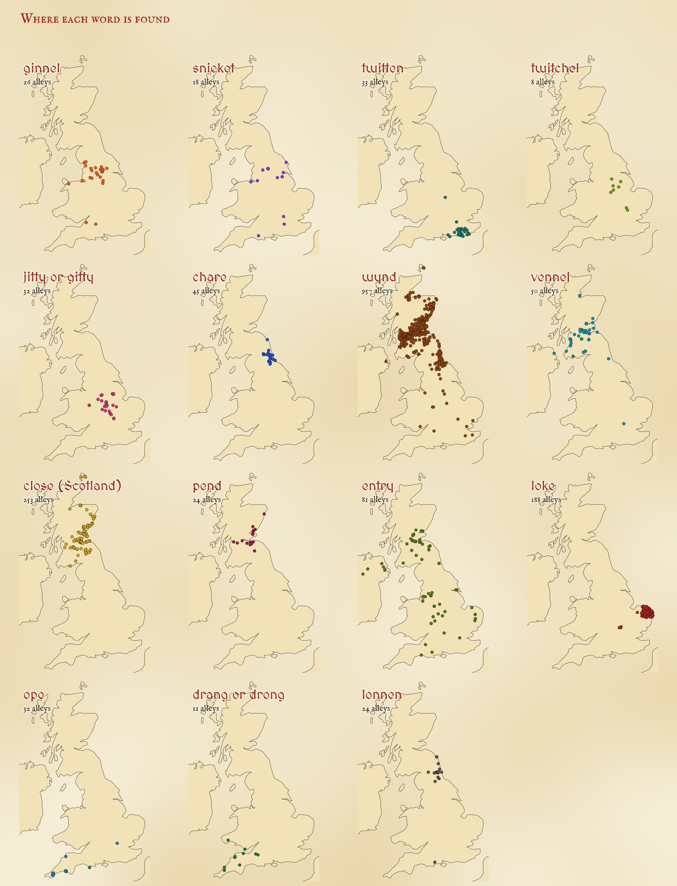
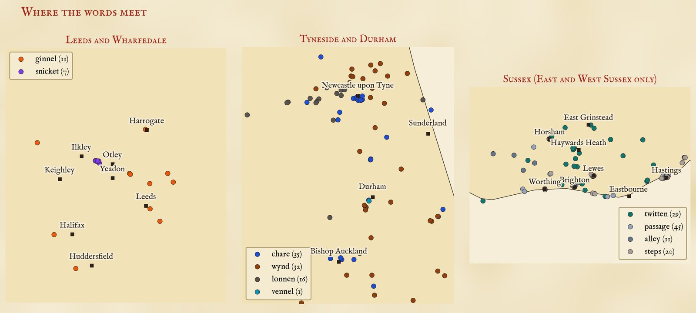
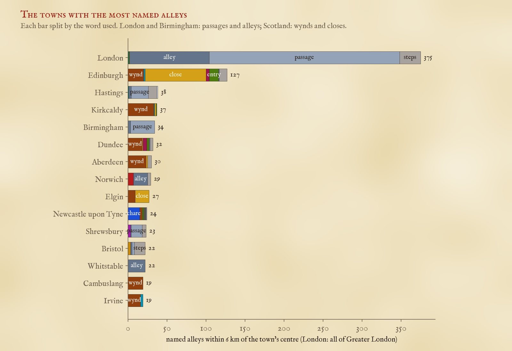
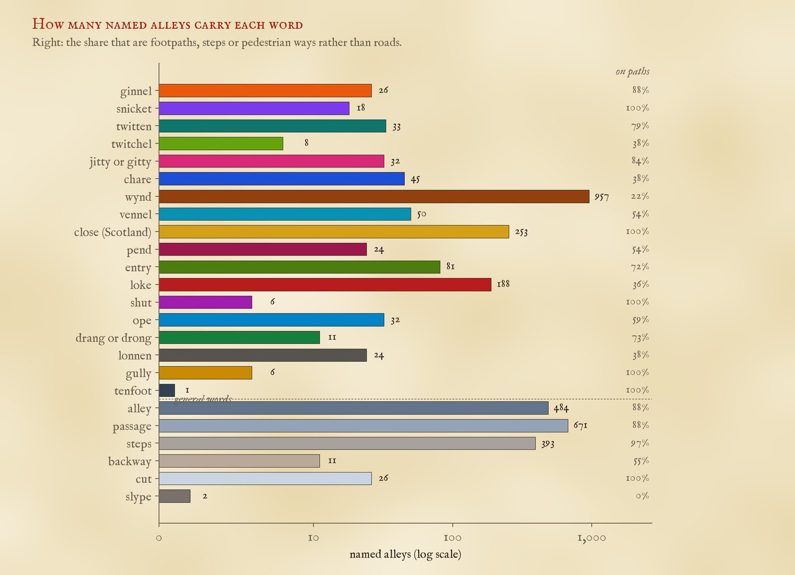

Every named alley in the UK, 3,382 of them, coloured by the word in its name. Grey dots are the general words: alley, passage, steps. Pick a word, turn on the hexagons, or tap a dot.
Britain has more words for the narrow path between two houses than for almost anything else in the street. A ginnel in Manchester is a snicket in York, a twitten in Brighton, a jitty in Leicester, a chare in Newcastle, a wynd or a close in Edinburgh and a loke in Norwich. People argue about them happily. But most of that is talk. What does the street sign say?
I took every highway in OpenStreetMap in the UK whose name ends in one of these words, joined the pieces of each alley together, threw out the false friends (a jetty that is a pier, a cut that is a canal, an entry that is a racing pit lane) and was left with 3,382 named alleys. 1,795 of them carry a regional word; the rest are plain alleys, passages and steps.
The map of street signs is lopsided. Of Scotland's 1,294 named alleys, 94% carry a regional word, nearly all of them wynd, close, vennel or pend. In England it is 28% of 2,016, and in Wales only 9%. London has 375 named alleys, more than anywhere else, and only 2 of them use a regional word. The rest are 244 passages, 102 alleys and a scattering of steps.

The commonest regional word in each 20 km hexagon with at least three named alleys that use one.
The wynd dominates: 957 of them, 850 in Scotland and 91 in the North East of England and North Yorkshire. But only 22% are footpaths. The rest are roads, many of them on new housing estates in Fife, Lanarkshire and Ayrshire: the old word for a narrow lane off a high street has become a builder's favourite for a cul-de-sac. The Scottish close is the opposite. I counted only footpaths named Close in Scotland, since in England a Close is usually a cul-de-sac, and 85 of the 253 are in Edinburgh, mostly the closes running down from the Royal Mile.
Where a regional word does reach the street sign, it stays at home. 29 of the 33 twittens are in East or West Sussex, with Haywards Heath, Burgess Hill and Lewes leading. 98% of the 188 lokes are in Norfolk or Suffolk (93% in Norfolk alone), with 17 around North Walsham. All 45 chares are in Tyne and Wear, Durham or Northumberland, 15 of them in Newcastle, where the chares run up from the Quayside. 97% of the 32 opes are in Devon, Cornwall or Dorset: 15 in Plymouth, more in Truro and Falmouth, and three on Portland. All 6 shuts are in Shropshire, three of them in Shrewsbury.

Every named alley with each regional word.
The jitty belongs to the East Midlands: 78% of 32 are in Leicestershire, Northamptonshire, Lincolnshire, Derbyshire and their neighbours, with four in Loughborough. I counted a jetty as a jitty only there, since everywhere else a jetty is a pier. There is also a small cluster of jitties around Broseley and Madeley in the Ironbridge Gorge. The ginnel is northern (88% of 26 in the northern counties, a third in West Yorkshire), and the lonnen, a Northumbrian lane rather than an alley, is almost all on Tyneside and in Northumberland.
The famous Yorkshire border is between the ginnel and the snicket. On the street signs, Yorkshire has 14 ginnels and 10 snickets. The ginnels are in Leeds, Huddersfield, Harrogate, Skipton and round about. 7 of the snickets are in one place: a cluster of paths named simply Snicket around Burley in Wharfedale, between Ilkley and Otley, 9.1 km from the nearest ginnel at Yeadon. That is a real line on the ground, but it is also a reminder of what this data is: a handful of paths named by one parish or one mapper can make a whole dialect area. York, home of the snickelway, has none named snicket at all.

Where words meet: Leeds and Wharfedale, Tyneside and Durham, and Sussex.
On Tyneside three words share the map: chares on the Quayside and in Durham's towns, lonnens on the edges, and wynds, many of them on newer estates. In Sussex the twittens are a country and small-town word, from Haywards Heath to the villages of the Weald, while Brighton and Hastings call most of their alleys passages or steps.
Counting alleys within 6 km of a town's centre (and the whole of Greater London as London), the most named alleys are in London (375), Edinburgh (127) and Hastings (38). Edinburgh has the most with a regional word, 116, and the widest mix: 7 different words. Then come the Fife and Tayside towns, Kirkcaldy, Dundee and Aberdeen, with their wynds, and Elgin, whose closes run off its high street.

The towns with the most named alleys, by word.
This map is of names, and names are official: chosen by councils, builders and, long ago, by whoever owned the land. They are not a record of what people say. The general picture matches the regional labels the dialect dictionaries give for these words, from the twitten of Sussex to the chare of the North East. But some of the best known words barely appear. No alley in the data is named jigger, in Liverpool or anywhere else (the word was in the search), there is a single tenfoot near Hull, and no gully in Birmingham (half of the six in the data are in Bristol). These are the words for the back alley behind a terrace, which hardly ever had a name of its own. The names that survive belong to the older lanes of town centres and to the fashions of developers.
The street-names study maps the commonest street names and their endings across Britain: maps.tristanhotham.com/street-names. For speech rather than signs, see the bread-roll map, from survey answers: Barm, bap, cob or roll?

How many named alleys carry each word, and how many of them are footpaths rather than roads.
Names. The raw data is 30,481 OpenStreetMap highways in the UK whose names include one of the words, queried with QLever. A name counts for a word only when the word is its head, the last word once house numbers, brackets and trailing route notes are removed. So Twitten Lane, Jetty Road and Chare Bank do not count. Close counts only for footpaths in Scotland. OpenStreetMap often maps one alley in several pieces, so pieces with the same name whose first points chain within 150 m were joined into one alley, and pieces of a road or of a name with a specific part (Cornish Snicket) within 600 m. That joined 3,256 pieces.
False friends. I read every alley of the ambiguous words. A jetty counts only in the East Midlands and next door; elsewhere it is a pier. A cut counts only as a footpath, never New Cut (a canal, a drain or a new road), an old railway cutting or a street such as The Cut in Southwark. Steps on a hill path far from a town are left out. By hand I removed climbing gullies and mountain bike trails called Gully, Alley or Steps, cave passages under a Welsh mountain, Tarr Steps (a clapper bridge), racing pit lanes called Entry, an aqueduct called the Greenock Cut and a Welsh field name, Parc y Shut. Three misspelt or doubled names were joined to their twins. In all 159 of 3,541 candidates (4.5%) went, 61 of them by hand.
What this cannot say. Most alleys have no name at all, and OpenStreetMap names some places more thoroughly than others. A dot marks where the first piece of each alley begins. The towns are Wikidata settlements of 10,000 people or more, and each alley goes to the nearest town centre, so an alley on the edge of a city can be counted to its neighbour. The search matched only the words listed here, and found Close only on footpaths, so a word left out of the list cannot appear. The dialect sources are background: I have not compared these dots with their maps.